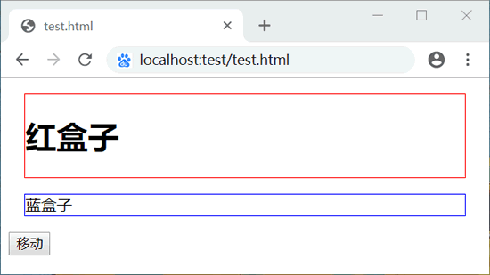
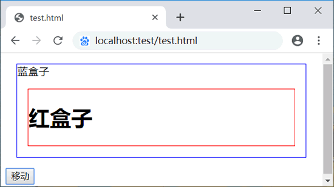
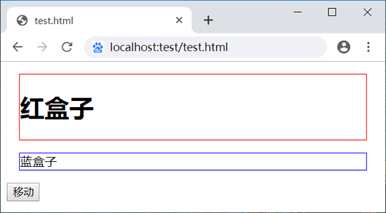
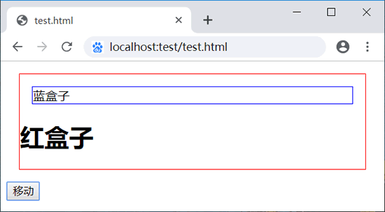

首页 > 编程笔记
JS appendChild()和insertBefore()方法：插入新节点
在文档中有两种办法插入新节点，一种是在开头插入，一种是在末尾插入。
将元素添加到文档树中，浏览器会立即呈现该元素。此后，对这个元素所作的任何修改都会实时反映在浏览器中。
insertBefore() 方法与 appendChild() 方法一样，可以把指定元素及其所包含的所有子节点都一起插入到指定位置中。同时会先删除移动的元素，再重新插入到新的位置。
appendChild()方法：在开头插入新节点
JavaScript appendChild() 方法可向当前节点的子节点列表的末尾添加新的子节点。用法如下：appendChild(newchild)
参数 newchild 表示新添加的节点对象，并返回新增的节点。示例1
下面示例展示了如何把段落文本增加到文档中的指定的 div 元素中，使它成为当前节点的最后一个子节点。
<div id="box"></div>
<script>
var p = document.createElement("p"); //创建段落节点
var txt = document.createTextNode("盒模型"); //创建文本节点，文本内容为“盒模型”
p.appendChild(txt); //把文本节点增加到段落节点中
document.getElementById("box").appendChild(p); //获取box元素，把段落节点增加尽量
</script>
如果文档树中已经存在参数节点，则将从文档树中删除，然后重新插入新的位置。如果添加的节点是 DocumentFragment 节点，则不会直接插入，而是把它的子节点插入当前节点的末尾。将元素添加到文档树中，浏览器会立即呈现该元素。此后，对这个元素所作的任何修改都会实时反映在浏览器中。
示例2
在下面示例中，新建两个盒子和一个按钮，使用 CSS 设计两个盒子显示为不同的效果；然后为按钮绑定事件处理程序，设计当点击按钮时执行插入操作。
<div id="red">
<h1>红盒子</h1>
</div>
<div id="blue">蓝盒子</div>
<button id="ok">移动</button>
<script>
var ok = document.getElementById("ok"); //获取按钮元素的引用
ok.onclick = function () { //为按钮注册一个鼠标单击事件的处理函数
var red = document.getElementById("red"); //获取红色盒子的引用
var blue= document.getElementById("blue"); //获取蓝色盒子的引用
blue.appendChild(red); //最后移动红色盒子到蓝色盒子中
}
</script>
上面代码使用 appendChild() 方法把红盒子移动到蓝色盒子中间。在移动指定节点时，会同时移动指定节点包含的所有子节点，演示效果如图所示。


insertBefore()方法：在末尾插入新节点
JavaScript insertBefore() 方法可向当前节点的子节点列表的开头添加新的子节点。用法如下：insertBefore(newchild, refchild)
其中参数 newchild 表示新插入的节点，refchild 表示插入新节点的节点，用于指定插入节点的后面相邻位置。插入成功后，该方法将返回新插入的子节点。示例3
针对示例 2 ，如果把蓝盒子移动到红盒子所包含的标题元素的前面，使用 appendChild() 方法是无法实现的，此时可以使用 insertBefore() 方法来实现。
var ok = documeng.getElementById("ok"); //获取按钮元素的引用
ok.onclick = function () { //为按钮注册一个鼠标单击事件处理函数
var red = document.getElementById("red"); //获取红色盒子的引用
var blue = document.getElementById("blue"); //获取蓝色盒子的引用
var h1 = document.getElementsByTagName("h1")[0]; //获取标题元素的引用
red.insertBefore(blue, h1); //把蓝色盒子移动到红色盒子内，且位于标题前面
}
当单击“移动”按钮之后，蓝色盒子被移动到红色盒子内部，且位于标题元素前面。演示效果如下：


insertBefore() 方法与 appendChild() 方法一样，可以把指定元素及其所包含的所有子节点都一起插入到指定位置中。同时会先删除移动的元素，再重新插入到新的位置。
关注公众号「站长严长生」，在手机上阅读所有教程，随时随地都能学习。内含一款搜索神器，免费下载全网书籍和视频。

微信扫码关注公众号